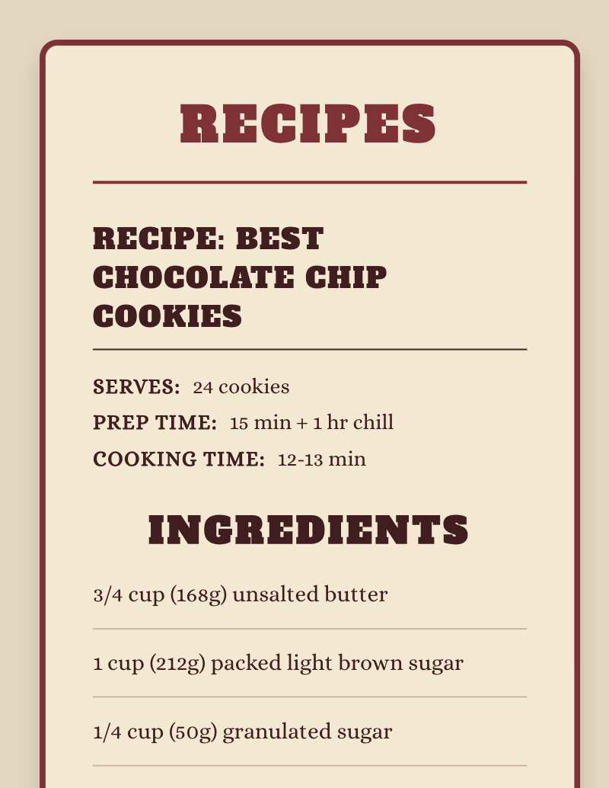
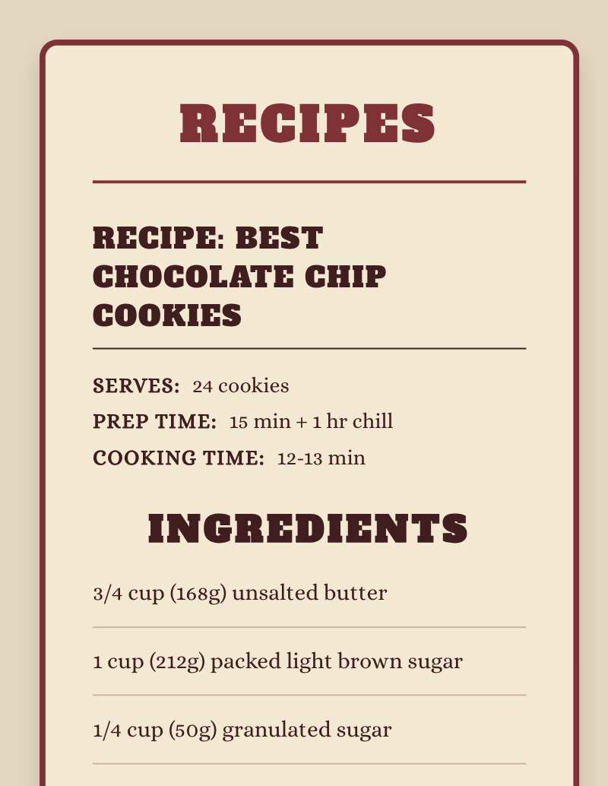

Course Description
This course is an introduction to HyperText Markup Language (HTML) and Cascading Style Sheets (CSS). Students examine the key components of HTML to create functional web pages and apply CSS style sheets to improve page layout and overall appearance. Class teaches elements of responsive web design and techniques of its implementation.
Assignment 01: Creating Basic HTML Elements
Overview
This assignment focuses on the structural foundation of the web. I practiced using semantic HTML5 tags to ensure the document is readable by both browsers and assistive technologies.
Screenshots:


Assignment Objectives
- Demonstrate understanding of basic HTML elements
- Practice structuring an HTML document
- Apply concepts of accessibility and semantic markup
Assignment Requirements
Click to view full requirements
doctypefor HTML5htmltagheadtag- UTF-8
metatag title(Name - Assignment 01)bodytag-
Semantic Elements:
headernavmainsectionorarticleasidefooter
- At least 2 different heading elements
- 2 paragraphs
- 1 pre-formatted paragraph (
pre) - 1 quote or block-quote with a citation
- 2 different styles of lists (Ordered/Unordered)
- 1
address - Horizontal rule (
hr) - Line break (
br) - Comment with name in the
headtag - 4 symbols or entities
- A
codesnippet featuring HTML - One
sup(superscript) - One
sub(subscript)
My Submission: Favorite Adventure Time Wizards
For this assignment, I created a page dedicated to the wizards of the Adventure Time universe. I used semantic sections to categorize each wizard and applied the required HTML elements to build out their lore.
"Magic Toggle"
While the assignment focused on HTML structure, I definitely went overboard. I have only written Python and Java since starting at LW Tech, and I REALLY miss web development, so I decided to add some CSS to the page for fun. I added a custom JavaScript function that allows users to "Disable Magic." By clicking the button in the navigation bar, all CSS is disabled, revealing the semantic HTML structure underneath.
It also gave me some practice using the aria-pressed attribute.
Colors & Accessibility
I generated the fun, accessible color scheme using Randoma11y!
Deployed Page
View the live assignment:
https://aeposten.github.io/csd112/assignments/assignment-1
Assignment 02: Understanding Images & Copyright
Overview
This assignment focused on semantic HTML structure and foundational web literacy surrounding image usage, copyright, and optimization.
Screenshots:
Assignment Objectives
- Create a well-structured HTML document using semantic elements
- Demonstrate understanding of common image types used on the web
- Explain copyright, fair use, and image licensing
- Introduce image optimization concepts and tools
Assignment Requirements
Click to view full requirements
-
titleelement in theheadusing the format "Lastname Assignment 2" -
headersection containing anh1with the text "Images and Copyright" -
Article: Image Types
articletagh2heading: Image Types- Explanation of the 3 main image types used in HTML
- Description of when to use each image type
- A section listing citations used
-
Article: Copyright
articletagh2heading: Copyright- Explanation of Copyright
- Explanation of fair use
- Two types of copyright licenses and their uses
- Explanation of how to verify permission to use an image
- Links to 3 websites that provide usable images
- A section listing citations used
-
Article: Image Optimization
articletagh2heading: Image Optimization- Explanation of image compression/optimization
- Why image optimization is necessary
- Links to 3 image optimization tools or software
- A section listing citations used
-
footerelement containing a copyright symbol, year, and my first and last name - Use of semantic HTML throughout the document
My Submission
Deployed Page
View the live assignment:
https://aeposten.github.io/csd112/assignments/assignment-2
Assignment 03: Styling a Recipe with CSS
Overview
This assignment focused on applying CSS styling to a real-world content scenario: a recipe. The goal was to combine semantic HTML structure with CSS styling using multiple selector types and common CSS properties.
Screenshots:
 

The second screenshot demonstrates responsive behavior, where layout sections stack vertically on smaller screens using Flexbox and media queries.
Assignment Objectives
- Practice utilizing the style tags or linking to an external style sheet
- Explore styling with different types of CSS selectors
- Discover how to utilize various CSS properties
- Employ knowledge of semantic HTML to logically structure a recipe
Assignment Requirements
Click to view full requirements
- Create a properly structured semantic HTML document
-
Correctly utilize at least three types of HTML elements
- Example: unordered list for ingredients
- Example: ordered list for steps
- Example: image to show final results
-
Internal CSS (to be referenced in the
headusing the<style>tag) -
Styling of at least one property using:
- A tag selector
- An ID selector
- A class selector
-
Styling of at least four properties overall (for example:
color,font-size,background-color, andpadding) - Use a real recipe (not filler text) and cite the source if used
My Submission
For this assignment, I styled my favorite Chocolate Chip Cookie recipe, Broma Bakery's – Best Chocolate Chip Cookies . I knew from reading the assignment description that I wanted to style the page to look like a recipe card. Initially, I thought I'd model it after a classic index card with blue lines, but after doing a search for "Recipe Cards" I found Papier's – Double Cherry Recipe Card and decided to use it as the model for my design.
I tried to improve my CSS by eliminating repetitive selectors, using top-to-bottom organization, and adding code comments. I continued my commitment to accessibility with ARIA labeling and challenged myself by adding responsive styling.
Credits
- Recipe source: Broma Bakery – Best Chocolate Chip Cookies (Sofi)
- Recipe card design inspiration: Papier – Double Cherry Recipe Card
Deployed Page
View the live assignment:
https://aeposten.github.io/csd112/assignments/assignment-3
Assignment 04: Typography and Color with CSS
Overview
This assignment focused on advanced CSS typography and color theory.
I created a newspaper-inspired layout with multiple web-hosted
fonts, a local font using @font-face, and various CSS
color spaces. The project emphasizes responsive design and
accessibility with ARIA landmarks.
Screenshots:
Assignment Objectives
- Practice using local fonts with
@font-face - Practice implementing web-hosted fonts
- Utilize various web color spaces
- Create a mobile-responsive layout
Assignment Requirements
Click to view full requirements
HTML Requirements:
- Create a properly structured semantic HTML document
- At least 2 different heading levels
- At least 3 paragraphs
- At least one blockquote
- At least one list type with minimum 3 items
CSS Styling - Typography:
- Change paragraphs to a sans-serif font
- Change headings to 2 different fonts using Google or Adobe fonts
-
Change blockquote to a local font using
@font-facerule - Change list items to a serif font
-
Utilize each property at least once:
font-sizefont-weightfont-styletext-aligntext-transformline-height
CSS Styling - Color:
- Change heading level one using a keyword color
- Change heading level two using a hexcode
- Apply slightly transparent background to blockquote using RGBA
- Change color of list items using HSL or HSLA
Additional Requirements:
-
Internal CSS (using
<style>tag) OR external stylesheet - Mobile responsive design
My Submission: The Daily Feline
For this assignment, I created "The Daily Feline," a
newspaper-inspired page featuring humorous cat-themed articles
generated by
Cat Ipsum. The layout uses a dark forest green background
(#10593b) with light cyan text (#f5fcff)
for a unique, vintage newspaper aesthetic.
The typography implementation showcases a carefully curated font
stack using imported Google fonts and a local font implemented via
the @font-face rule to meet the assignment requirement.
The assignment required exploring different CSS color formats, which I applied strategically throughout the design.
I implemented a responsive design using CSS Grid that adapts across screen sizes. On mobile devices, all content stacks vertically in a single column for easy reading. At the tablet breakpoint (768px and up), the layout transitions to a two-column grid. The desktop layout (1024px and up) adopts a true newspaper-style design with a sidebar, placing the quote box alongside the main articles. For large desktop screens (1440px and up), typography scales up and the maximum width increases to take advantage of the additional space.
To improve code maintainability, I organized the CSS using modern best practices. CSS variables define all colors, fonts, spacing values, and border styles in one central location, making theme changes simple. Section comments clearly divide the stylesheet into logical groups like typography, layout components, and responsive design.
Finally, I enhanced the page's accessibility with comprehensive ARIA implementation.
Credits
- Content generated by: Cat Ipsum
Deployed Page
View the live assignment:
https://aeposten.github.io/csd112/assignments/assignment-4